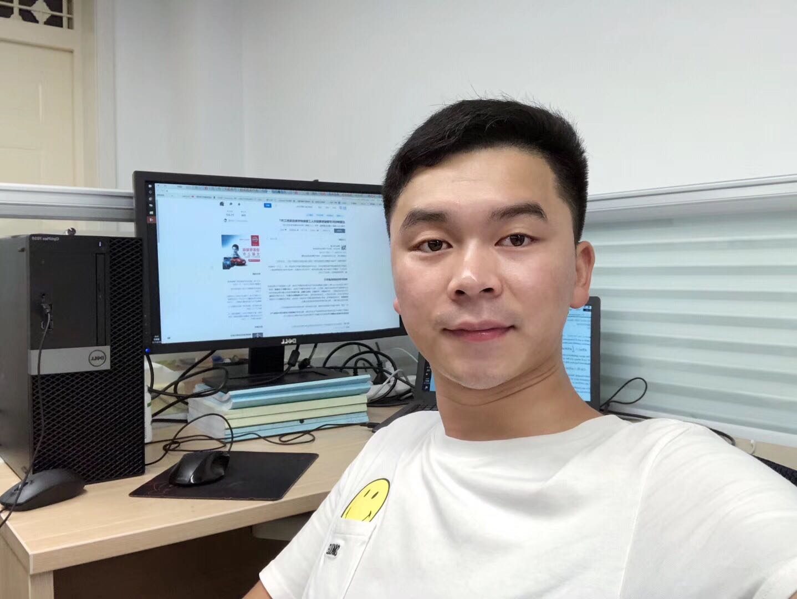

Ning MaPh.D. Student
Address: Department of Computer Science and Technology |
 |
Project Introduction
Cerebral palsy (CP) is usually caused by non-progressive brain damage in developing fetuses. Sincerely. early assessment of the risk of cerebral palsy in high-risk children will help to take appropriate intervention measures before the pathological features of cerebral palsy manifest, which will help reduce the degree of disability of the children.
Our team established auxiliary quantitative tools for the baby's movement process to help doctor diagnoses, via a series of computer vision methods, e.g., pose estimation, few-shot action recognition and time-series anomaly detection. Our tools can also locate the parts of abnormal movements, which provides better interpretability for clinical diagnosis. Bellows are our Chinese version website for the Children's Affiliated Hospital of Zhejiang University:


Data Collection
We managed to collect nearly 1500 infant movement videos within 5 years and conduct analysis experiments, to prove that our method can directly predict the neurological injury of newborns than experts. Due to data privacy, the videos are not avaliable for public, but the skeleton data are open and only for research perpose.